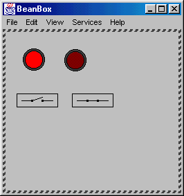
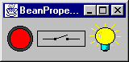

46.4 Bean-Ereignisse
Um die Kommunikation zwischen Beans zu vereinfachen und zu vereinheitlichen,
sieht die Beans-Spezifikation einige Techniken vor, mit denen Beans
untereinander kommunizieren können. Die wichtigste von ihnen
ist die Möglichkeit, Nachrichten zu versenden, wenn sich eine
bestimmte Eigenschaft der Bean geändert hat. Das dabei angewendete
Schema entspricht genau dem Delegation Based Event Handling, das in
Kapitel 28 erläutert
wurde und das auch alle anderen Dialogelemente zur Kommunikation mit
anderen Komponenten verwenden.
46.4.1 Bound Properties
Eigenschaften, bei deren Veränderung Ereignisse ausgesandt werden,
bezeichnet man auch als gebundene Eigenschaften
(Bound Properties). Nicht alle Eigenschaften
müssen gebunden sein. Sie sollten es dann sein, wenn die Bean
anderen Objekten die Möglichkeit geben will, auf Änderungen
des Ereignisses direkt und in definierter (und für einen GUI-Designer
erkennbaren) Weise zu reagieren.
Zusätzlich zu den bereits bekannten Ereignistypen definiert die
Bean-Architektur dazu eine neue Ereignisklasse PropertyChangeEvent,
die im Paket java.beans
untergebracht ist. Sie ist aus EventObject
abgeleitet und stellt unter anderem folgende Methoden zur Verfügung:
Mit getPropertyName
kann der Name der veränderten Eigenschaft ermittelt werden. getNewValue
liefert ihren neuen Wert und getOldValue
den Wert, den sie vor der Änderung hatte. Die Werte werden stets
als Objekttyp zurückgegeben. Primitive Typen werden in ihre korrespondierenden
Wrapper-Klassen verpackt (siehe Abschnitt 11.2).
Eine Bean erzeugt immer dann ein PropertyChangeEvent
und versendet es an alle registrierten Listener, wenn sich der Zustand
einer gebundenen Eigenschaft verändert hat. Ein Listener
muss das Interface PropertyChangeListener
implementieren. Es enthält nur eine Methode:
Verändert sich die gebundene Eigenschaft, erzeugt die Bean ein
PropertyChangeEvent
mit dem neuen und dem alten Wert und ruft bei allen registrierten
Listenern propertyChange
auf. Die Registrierung bzw. Deregistrierung von Listenern erfolgt
mit den Methoden addPropertyChangeListener
und removePropertyChangeListener,
die beide einen PropertyChangeListener
als Argument erwarten.
Um die Bean beim Umgang mit gebundenen Eigenschaften zu unterstützen,
gibt es im Paket java.beans
eine Hilfsklasse PropertyChangeSupport.
Sie stellt einige nützliche Methoden zur Verfügung, mit
denen eine Bean die bei der Event-Registrierung und -verteilung anfallenden
Aufgaben delegieren kann:
public void addPropertyChangeListener(
PropertyChangeListener listener
)
public void removePropertyChangeListener(
PropertyChangeListener listener
)
public void firePropertyChange(PropertyChangeEvent evt)
public void firePropertyChange(
String propertyName,
Object oldValue,
Object newValue
)
public void firePropertyChange(
String propertyName,
int oldValue,
int newValue
)
public void firePropertyChange(
String propertyName,
boolean oldValue,
boolean newValue
)
|
java.beans.PropertyChangeSupport |
Die Bean instanziert bei Bedarf ein Objekt dieser Klasse und gibt
Aufrufe der eigenen Methoden addPropertyChangeListener
und removePropertyChangeListener
einfach weiter. Ändert sich eine gebundene Eigenschaft, ruft
die Bean eine der firePropertyChange-Methoden
auf und sendet dadurch ein PropertyChangeEvent
an alle registrierten Listener. Diese Methode steht einerseits vordefiniert
für die Typen int,
boolean
und Object
zur Verfügung. Andererseits kann aber auch manuell ein PropertyChangeEvent
erzeugt und weitergegeben werden.
Wir wollen uns als erstes Beispiel eine Bean ansehen, die einen beleuchteten
Taster implementiert. Der Taster kann wahlweise an- oder ausgeschaltet
sein. In angeschaltetem Zustand leuchtet er, in ausgeschaltetem Zustand
ist seine Oberfläche dunkel. Jeder Tastendruck schaltet zwischen
den beiden Zuständen um. Die wichtigste Eigenschaft des Tasters
heißt lightOn. Sie ist
gebunden und zeigt an, ob der Taster an- oder ausgeschaltet ist:
001 /* LightedPushButton.java */
002
003 import java.awt.*;
004 import java.awt.event.*;
005 import java.io.*;
006 import java.beans.*;
007
008 public class LightedPushButton
009 extends Canvas
010 implements Serializable
011 {
012 //---Instanzvariablen----------------------------------------
013 protected Color linecolor;
014 protected Color framecolor;
015 protected Color lightoncolor;
016 protected Color lightoffcolor;
017 protected boolean lighton;
018 transient protected PropertyChangeSupport pchglisteners;
019 transient protected VetoableChangeSupport vchglisteners;
020
021 //---Methoden------------------------------------------------
022 public LightedPushButton()
023 {
024 linecolor = Color.black;
025 framecolor = Color.darkGray;
026 lightoncolor = Color.red;
027 lightoffcolor = new Color(127, 0, 0); //dark red
028 lighton = false;
029 initTransientState();
030 }
031
032 //---Zustandsumschaltung Licht an/aus---
033 public void setLightOn(boolean on)
034 throws PropertyVetoException
035 {
036 boolean oldvalue = this.lighton;
037 vchglisteners.fireVetoableChange("lighton", oldvalue, on);
038 this.lighton = on;
039 if (oldvalue != on) {
040 repaint();
041 }
042 pchglisteners.firePropertyChange("lighton", oldvalue, on);
043 }
044
045 public boolean getLightOn()
046 {
047 return this.lighton;
048 }
049
050 //---Verwaltung der PropertyChangeListener---
051 public void addPropertyChangeListener(PropertyChangeListener l)
052 {
053 pchglisteners.addPropertyChangeListener(l);
054 }
055
056 public void removePropertyChangeListener(PropertyChangeListener l)
057 {
058 pchglisteners.removePropertyChangeListener(l);
059 }
060
061 //---Verwaltung der VetoableChangeListener---
062 public void addVetoableChangeListener(VetoableChangeListener l)
063 {
064 vchglisteners.addVetoableChangeListener(l);
065 }
066
067 public void removeVetoableChangeListener(VetoableChangeListener l)
068 {
069 vchglisteners.removeVetoableChangeListener(l);
070 }
071
072 //---Implementierung der Oberfläche---
073 public void paint(Graphics g)
074 {
075 int width = getSize().width;
076 int height = getSize().height;
077 //Rahmen
078 g.setColor(framecolor);
079 g.fillOval(0, 0, width, height);
080 //Beleuchtung
081 g.setColor(lighton ? lightoncolor : lightoffcolor);
082 g.fillOval(4, 4, width - 8, height - 8);
083 //Konturlinien
084 g.setColor(linecolor);
085 g.drawOval(0, 0, width - 1, height - 1);
086 g.drawOval(3, 3, width - 7, height - 7);
087 }
088
089 public Dimension getPreferredSize()
090 {
091 return new Dimension(32, 32);
092 }
093
094 public Dimension getMinimumSize()
095 {
096 return new Dimension(16, 16);
097 }
098
099 //---Private Klassen---------------------------------------
100 /**
101 * Initialisierung der nichtpersistenten Instanzvariablen.
102 */
103 private void initTransientState()
104 {
105 pchglisteners = new PropertyChangeSupport(this);
106 vchglisteners = new VetoableChangeSupport(this);
107 addMouseListener(new MouseClickAdapter());
108 }
109
110 /**
111 * Wird überlagert, um nach dem Deserialisieren den transienten
112 * Zustand zu initialisieren.
113 */
114 private void readObject(ObjectInputStream stream)
115 throws IOException, ClassNotFoundException
116 {
117 stream.defaultReadObject();
118 initTransientState();
119 }
120
121 //---Lokale Klassen----------------------------------------
122 class MouseClickAdapter
123 extends MouseAdapter
124 {
125 public void mouseClicked(MouseEvent event)
126 {
127 try {
128 setLightOn(!getLightOn());
129 } catch (PropertyVetoException e) {
130 //no change if vetoed
131 }
132 }
133 }
134 }
|
LightedPushButton.java |
Listing 46.6: Ein beleuchteter Taster
Die Klasse verwendet ein PropertyChangeSupport-Objekt,
um die Listener zu verwalten und sie von Änderungen des Beleuchtungszustands
zu unterrichten. Das hier ebenfalls verwendete VetoableChangeSupport-Objekt
und die mit seiner Hilfe implementierten Methoden werden im nächsten
Abschnitt erläutert und können zunächst ignoriert werden.
Interessant ist die Implementierung der Methode setLightOn.
Sie merkt sich zunächst den bisherigen Zustand und schaltet dann
auf den neuen Zustand um. Anschließend werden alle registrierten
Listener über die Änderung benachrichtigt. Der Name der
gebundenen Eigenschaft ist »lighton« und entspricht damit
dem Namen der betroffenen Eigenschaft. Eine eindeutige Benennung erlaubt
es registrierten Listenern, zwischen Benachrichtigungen für unterschiedliche
Eigenschaften zu unterscheiden.
Abbildung 46.5 zeigt die Klasse
LightedPushButton in ihren beiden
möglichen Zuständen in der Beanbox.
46.4.2 Constrained Properties
Eine Erweiterung der gebundenen Eigenschaften wurde im vorigen Abschnitt
schon angedeutet. Mit dem Konzept der Constrained Properties
( »verbotene« oder »unterbundene« Eigenschaften)
kann eine Bean registrierten Listenern die Möglichkeit geben,
Eigenschaftenänderungen zu verhindern.
Ein Listener, der das tun will, muss das Interface VetoableChangeListener
implementieren. Es stellt nur eine Methode zur Verfügung:
Immer wenn sich eine Constrained Property ändern soll, ruft die
Bean vor der Änderung bei den registrierten Listenern
die Methode vetoableChange
auf. Der Empfänger prüft daraufhin das übergebene PropertyChangeEvent
und entscheidet, ob er dem Änderungswunsch zustimmen soll oder
nicht. Ist das nicht der Fall, löst er eine PropertyVetoException
aus, die beim Empfänger dazu führt, dass der Änderungsvorgang
abgebrochen wird. Stimmt er dagegen zu, ist gar nichts zu tun. Der
Listener terminiert einfach und die Bean fährt mit der Befragung
beim nächsten Listener fort. Nur wenn alle Listener zugestimmt
haben (also niemand eine PropertyVetoException
ausgelöst hat), wird die Änderung tatsächlich durchgeführt.
Die Methode setLightOn in Listing 46.6
macht »lightOn« also sowohl zu einer gebundenen als auch
unterbindbaren Eigenschaft. Zunächst prüft sie, ob alle
registrierten VetoableChangeListener
eine mögliche Zustandsänderung nicht ablehnen. Erst wenn
das der Fall ist, wird die Änderung tatsächlich durchgeführt
und die registrierten PropertyChangeListener
werden darüber informiert.
Das Registrieren und Deregistrieren erfolgt mit den Methoden addVetoableChangeListener
und removeVetoableChangeListener.
Ebenso wie die korrespondierenden Methoden zur Registrierung der PropertyChangeListener
müssen ihre Namen und Parameter genau der hier angegebenen Form
entsprechen, damit sie vom GUI-Designer gefunden werden.
Zur Unterstützung bei der Implementierung kann sich die Bean
der Klasse VetoableChangeSupport
bedienen, die ähnliche Methoden wie PropertyChangeSupport
zur Verfügung stellt:
public void addVetoableChangeListener(
VetoableChangeListener listener
)
public void removeVetoableChangeListener(
VetoableChangeListener listener
)
public void fireVetoableChange(PropertyChangeEvent evt)
throws PropertyVetoException
public void fireVetoableChange(
String propertyName,
Object oldValue,
Object newValue
)
throws PropertyVetoException
public void fireVetoableChange(
String propertyName,
int oldValue,
int newValue
)
throws PropertyVetoException
public void fireVetoableChange(
String propertyName,
boolean oldValue,
boolean newValue
)
throws PropertyVetoException
|
java.beans.VetoableChangeSupport |
Um im nächsten Abschnitt ein Beispiel für die Anwendung
von Constrained Properties geben zu können, wollen wir eine Klasse
vorstellen, die das Interface VetoableChangeListener
implementiert. Sie wird durch eine Bean repräsentiert, die einen
einfachen Umschalter darstellt, der durch Mausklick geöffnet
oder geschlossen werden kann. Ist der Schalter geschlossen, sind Eigenschaftsänderungen
erlaubt. Ist er dagegen geöffnet, wird bei jedem Aufruf von vetoableChange
eine PropertyVetoException
ausgelöst. Auf diese Weise werden bei geöffnetem Schalter
alle Eigenschaftsänderungen verhindert:
001 /* VetoSwitch.java */
002
003 import java.awt.*;
004 import java.awt.event.*;
005 import java.io.*;
006 import java.beans.*;
007
008 public class VetoSwitch
009 extends Canvas
010 implements Serializable, VetoableChangeListener
011 {
012 //---Instanzvariablen----------------------------------------
013 protected Color linecolor;
014 protected boolean vetoallchanges;
015
016 //---Methoden------------------------------------------------
017 public VetoSwitch()
018 {
019 this.linecolor = Color.black;
020 this.vetoallchanges = false;
021 initTransientState();
022 }
023
024 //---Konturenfarbe---
025 public void setLineColor(Color color)
026 {
027 this.linecolor = color;
028 }
029
030 public Color getLineColor()
031 {
032 return this.linecolor;
033 }
034
035 //---Zustandsumschaltung Licht an/aus---
036 public void setVetoAllChanges(boolean b)
037 {
038 if (this.vetoallchanges != b) {
039 this.vetoallchanges = b;
040 repaint();
041 }
042 }
043
044 public boolean getVetoAllChanges()
045 {
046 return this.vetoallchanges;
047 }
048
049 //---Veto---
050 public void vetoableChange(PropertyChangeEvent e)
051 throws PropertyVetoException
052 {
053 if (this.vetoallchanges) {
054 throw new PropertyVetoException("!!!VETO!!!", e);
055 }
056 }
057
058 //---Implementierung der Oberfläche---
059 public void paint(Graphics g)
060 {
061 int width = getSize().width;
062 int height = getSize().height;
063 g.setColor(linecolor);
064 g.drawRect(0, 0, width - 1, height - 1);
065 g.drawLine(width * 1 / 8, height / 2, width * 3 / 8, height / 2);
066 g.drawLine(width * 5 / 8, height / 2, width * 7 / 8, height / 2);
067 g.fillRect(width * 3 / 8 - 1, height / 2 - 1, 3, 3);
068 g.fillRect(width * 5 / 8 - 1, height / 2 - 1, 3, 3);
069 if (this.vetoallchanges) {
070 //draw open connection
071 g.drawLine(width * 3 / 8, height / 2, width * 5 / 8, height / 4);
072 } else {
073 //draw short-cutted connection
074 g.drawLine(width * 3 / 8, height / 2, width * 5 / 8, height / 2);
075 }
076 }
077
078 public Dimension getPreferredSize()
079 {
080 return new Dimension(60, 20);
081 }
082
083 public Dimension getMinimumSize()
084 {
085 return new Dimension(28, 10);
086 }
087
088 //---Private Klassen----------------------------------------
089 private void initTransientState()
090 {
091 addMouseListener(new MouseClickAdapter());
092 }
093
094 /**
095 * Wird überlagert, um nach dem Deserialisieren den transienten
096 * Zustand zu initialisieren.
097 */
098 private void readObject(ObjectInputStream stream)
099 throws IOException, ClassNotFoundException
100 {
101 stream.defaultReadObject();
102 initTransientState();
103 }
104
105 //---Lokale Klassen----------------------------------------
106 class MouseClickAdapter
107 extends MouseAdapter
108 {
109 public void mouseClicked(MouseEvent event)
110 {
111 setVetoAllChanges(!getVetoAllChanges());
112 }
113 }
114 }
|
VetoSwitch.java |
Listing 46.7: Ein Veto-Schalter
Abbildung 46.5 zeigt die Klasse
VetoSwitch in ihren beiden möglichen
Zuständen in der Beanbox:

Abbildung 46.5: LightedPushButton und VetoSwitch in der Beanbox
46.4.3 Anwendungsbeispiel
Das folgende Listing zeigt die drei bisher definierten Beans im Zusammenspiel.
Zunächst werden alle drei Elemente instanziert und auf einem
Frame platziert. Da der LightedPushButton
bei jedem Tastendruck den Zustand der LightBulb
umschalten soll, bekommt er einen PropertyChangeListener
zugeordnet, der bei Zustandsänderungen der Eigenschaft »lighton«
die Lampe umschaltet.
Der VetoSwitch wird als VetoableChangeListener
ebenfalls beim LightedPushButton
registriert. Da er in geöffnetem Zustand alle unterbindbaren
Eigenschaftenänderungen verhindert, dient er dazu, die Funktion
des Buttons zu deaktivieren. Nur, wenn der VetoSwitch
geschlossen ist, hat das Drücken des LightedPushButton
eine Änderung des Lampenzustands zur Folge.
001 /* Listing4608.java */
002
003 import java.awt.*;
004 import java.awt.event.*;
005 import java.beans.*;
006
007 public class Listing4608
008 extends Frame
009 {
010 public Listing4608()
011 {
012 //Initialisierung
013 super("BeanPropertiesTest");
014 setLayout(new FlowLayout());
015 setBackground(Color.lightGray);
016 addWindowListener(
017 new WindowAdapter() {
018 public void windowClosing(WindowEvent event)
019 {
020 System.exit(0);
021 }
022 }
023 );
024 //Dialogelemente hinzufügen
025 LightedPushButton button1 = new LightedPushButton();
026 VetoSwitch veto1 = new VetoSwitch();
027 final LightBulb bulb1 = new LightBulb();
028 add(button1);
029 add(veto1);
030 add(bulb1);
031 button1.addPropertyChangeListener(
032 new PropertyChangeListener() {
033 public void propertyChange(PropertyChangeEvent e)
034 {
035 if (e.getPropertyName().equals("lighton")) {
036 Boolean on = (Boolean)e.getNewValue();
037 bulb1.setLightOn(on.booleanValue());
038 }
039 }
040 }
041 );
042 button1.addVetoableChangeListener(veto1);
043 }
044
045 //---main-------------------------------------------------
046 public static void main(String[] args)
047 {
048 Listing4608 frm = new Listing4608();
049 frm.setLocation(100, 100);
050 frm.pack();
051 frm.setVisible(true);
052 }
053 }
|
Listing4608.java |
Listing 46.8: Eigenschaftenänderungen von Beans
Abbildung 46.6 zeigt das
Programm mit angeschalteter Lampe und anschließend geöffnetem
Schalter. Das Drücken des Tasters bleibt nun so lange erfolglos,
bis der Schalter wieder geschlossen wird.

Abbildung 46.6: Testprogramm für Eigenschaftenänderungen